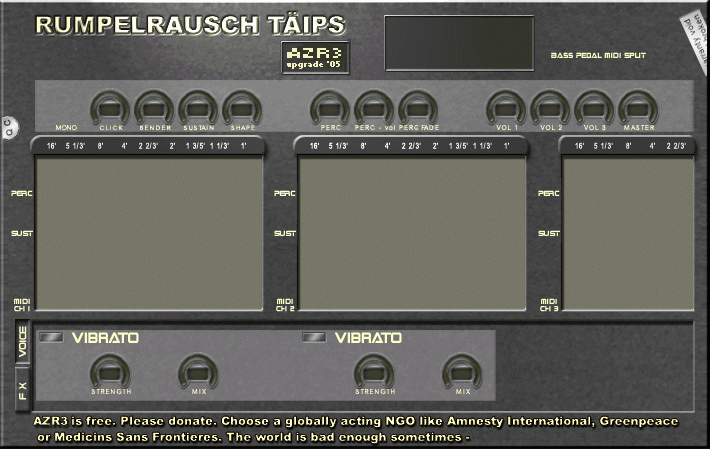

<polymer-element name="dawsynth-azr3" attributes="host">
<template>	
<flip-card id="flipper" axis="y">
	<div id="synthpanel" class="front">
		
		<!-- daw-toggle class="onoff" id="n_compare" x="537" y="19"></daw-toggle>
		<daw-toggle class="onoff" id="n_save" x="537" y="34"></daw-toggle -->
		<daw-toggle class="onoff" id="n_split" x="537" y="49"></daw-toggle>
		<daw-toggle class="onoff" id="n_mono" x="61" y="105"></daw-toggle>

		<daw-knob class="gauge" id="n_click" x="88" y="88" value="0"></daw-knob>
		<daw-knob class="gauge" id="n_bender" x="132" y="88" value="0"></daw-knob>
		<daw-knob class="gauge" id="n_sustain" x="176" y="88" value="0"></daw-knob>
		<daw-knob class="gauge" id="n_shape" x="220" y="88" value="0"></daw-knob>

		<daw-knob class="gauge" id="n_perc" x="308" y="88" value="0"></daw-knob>
		<daw-knob class="gauge" id="n_percvol" x="352" y="88" value="0"></daw-knob>
		<daw-knob class="gauge" id="n_percfade" x="396" y="88" value="0"></daw-knob>

		<daw-knob class="gauge" id="n_vol1" x="484" y="88" value="0"></daw-knob>
		<daw-knob class="gauge" id="n_vol2" x="528" y="88" value="0"></daw-knob>
		<daw-knob class="gauge" id="n_vol3" x="572" y="88" value="0"></daw-knob>
		<daw-knob class="gauge" id="n_master" x="616" y="88" value="0"></daw-knob>

		<!-- channel 1 -->
		<daw-toggle class="onoff" id="n_1_perc" x="16" y="173"></daw-toggle>
		<daw-toggle class="onoff" id="n_1_sustain" x="16" y="213"></daw-toggle>
		<daw-toggle class="midiind" id="n_1_midi" x="15" y="286" interactive="false"></daw-toggle>

		<daw-drawbar class="brownbar" id="n_1_db1" x="42" y="159"></daw-drawbar>
		<daw-drawbar class="brownbar" id="n_1_db3" x="66" y="159"></daw-drawbar>
		<daw-drawbar class="whitebar" id="n_1_db2" x="90" y="159"></daw-drawbar>
		<daw-drawbar class="whitebar" id="n_1_db4" x="114" y="159"></daw-drawbar>
		<daw-drawbar class="blackbar" id="n_1_db5" x="138" y="159"></daw-drawbar>
		<daw-drawbar class="whitebar" id="n_1_db6" x="162" y="159"></daw-drawbar>
		<daw-drawbar class="blackbar" id="n_1_db7" x="186" y="159"></daw-drawbar>
		<daw-drawbar class="blackbar" id="n_1_db8" x="210" y="159"></daw-drawbar>
		<daw-drawbar class="whitebar" id="n_1_db9" x="234" y="159"></daw-drawbar>

		<!-- channel 2 -->
		<daw-toggle class="onoff" id="n_2_perc" x="279" y="173"></daw-toggle>
		<daw-toggle class="onoff" id="n_2_sustain" x="279" y="213"></daw-toggle>
		<daw-toggle class="midiind" id="n_2_midi" x="278" y="286" interactive="false"></daw-toggle>

		<daw-drawbar class="brownbar" id="n_2_db1" x="305" y="159"></daw-drawbar>
		<daw-drawbar class="brownbar" id="n_2_db3" x="329" y="159"></daw-drawbar>
		<daw-drawbar class="whitebar" id="n_2_db2" x="353" y="159"></daw-drawbar>
		<daw-drawbar class="whitebar" id="n_2_db4" x="377" y="159"></daw-drawbar>
		<daw-drawbar class="blackbar" id="n_2_db5" x="401" y="159"></daw-drawbar>
		<daw-drawbar class="whitebar" id="n_2_db6" x="425" y="159"></daw-drawbar>
		<daw-drawbar class="blackbar" id="n_2_db7" x="449" y="159"></daw-drawbar>
		<daw-drawbar class="blackbar" id="n_2_db8" x="473" y="159"></daw-drawbar>
		<daw-drawbar class="whitebar" id="n_2_db9" x="497" y="159"></daw-drawbar>

		<!-- channel 3 -->
		<daw-toggle class="onoff" id="n_3_perc" x="543" y="173"></daw-toggle>
		<daw-toggle class="onoff" id="n_3_sustain" x="543" y="213"></daw-toggle>
		<daw-toggle class="midiind" id="n_3_midi" x="542" y="286" interactive="false"></daw-toggle>

		<daw-drawbar class="brownbar" id="n_3_db1" x="569" y="159"></daw-drawbar>
		<daw-drawbar class="brownbar" id="n_3_db3" x="593" y="159"></daw-drawbar>
		<daw-drawbar class="whitebar" id="n_3_db2" x="617" y="159"></daw-drawbar>
		<daw-drawbar class="whitebar" id="n_3_db4" x="641" y="159"></daw-drawbar>
		<daw-drawbar class="blackbar" id="n_3_db5" x="665" y="159"></daw-drawbar>

		<!-- mode swithces and text display -->
		<div id="voicemode"></div>
		<div id="fxmode"></div>
		<div id="display"></div>

		<!-- voice params -->
		<div id="voiceparams">
			<daw-toggle class="onoffgreen" id="n_1_vibrato" x="39" y="332"></daw-toggle>
			<daw-knob class="gauge" id="n_1_vstrength" x="88" y="352" value="0"></daw-knob>
			<daw-knob class="gauge" id="n_1_vmix" x="176" y="352" value="0"></daw-knob>

			<daw-toggle class="onoffgreen" id="n_2_vibrato" x="302" y="332"></daw-toggle>
			<daw-knob class="gauge" id="n_2_vstrength" x="352" y="352" value="0"></daw-knob>
			<daw-knob class="gauge" id="n_2_vmix" x="440" y="352" value="0"></daw-knob>
		</div>

		<!-- effect params -->
		<div id="fxparams" style="display:none;">
			<daw-toggle class="onoffgreen" id="n_mrvalve" x="39" y="332"></daw-toggle>
			<daw-knob class="gauge" id="n_drive" x="44" y="352" value="0"></daw-knob>
			<daw-knob class="gauge" id="n_set" x="88" y="352" value="0"></daw-knob>
			<daw-knob class="gauge" id="n_tone" x="132" y="352" value="0"></daw-knob>
			<daw-knob class="gauge" id="n_mix" x="176" y="352" value="0"></daw-knob>

			<daw-toggle class="onoffgreen" id="n_speakers" x="302" y="332"></daw-toggle>
			<daw-toggle class="onoff" id="n_complex" x="444" y="331"></daw-toggle>
			<daw-toggle class="onoff" id="n_pedalspeed" x="512" y="331"></daw-toggle>
			<daw-toggle class="vonoff" id="n_speed" x="322" y="356"></daw-toggle>
			<daw-knob class="gauge" id="n_l_slow" x="352" y="352" value="0"></daw-knob>
			<daw-knob class="gauge" id="n_l_fast" x="396" y="352" value="0"></daw-knob>
			<daw-knob class="gauge" id="n_u_slow" x="440" y="352" value="0"></daw-knob>
			<daw-knob class="gauge" id="n_u_fast" x="484" y="352" value="0"></daw-knob>
			<daw-knob class="gauge" id="n_belt" x="528" y="352" value="0"></daw-knob>
			<daw-knob class="gauge" id="n_spread" x="572" y="352" value="0"></daw-knob>
		</div>
	</div>
	<div class="back">
		<dawplug-specs id="specs"></dawplug-specs>
	</div>
</flip-card>
<style>
	:host { display:inline-block; position: relative; transform-origin:top left; }
	.onoff { background-image:url(gui/minioffon.bmp); height:12px; }
	.onoffgreen { background-image:url(gui/onoffgreen.bmp); height:11px; }
	.vonoff { background-image:url(gui/vonoff.bmp); height:28px; }
	.gauge { background-image:url(gui/cknob.png); content:"states:41;"; width:44px; height:44px; }
	.brownbar { background-image:url(gui/dbbrown.bmp); content:"min:0; max:8; thumbsize:31;"; }
	.whitebar { background-image:url(gui/dbwhite.bmp); content:"min:0; max:8; thumbsize:31;"; }
	.blackbar { background-image:url(gui/dbblack.bmp); content:"min:0; max:8; thumbsize:31;"; }
	daw-drawbar { width:22px; height:150px; }
	.midiind { background-image:url(gui/miniledred.bmp); height:7px; }
	.gaugevalue { color:yellow; margin:0; padding:2px 0 0 0; text-align:center; font-family:sans-serif; font-size:9px;
		position:absolute; width:19px; height:11px; line-height:11px; }
	#voicemode { position:absolute; left:15px; top:322px; width:13px; height:40px; background:transparent; }
	#fxmode { position:absolute; left:15px; top:368px; width:13px; height:40px; background:transparent; }
	#display { position:absolute; left:387px; top:17px; width:142px; height:51px;
		background:transparent; font-family:sans-serif; font-size:10px; }
	
	#flipper { position:relative; }
	.front { display:inline-block; }
	.back { position:absolute; top:0; background:#444; width:100%; height:100%; }
	#specs { width:242px; height:449px; display:block; }
</style>
</template>
	
<script src="azr3.js"></script>
<script>
(function () {
	var modeswitched = false;
	var midiIndicators = [];
	Polymer("dawsynth-azr3",
	{
		ready: function ()
		{
			this.$.voicemode.onclick = this.onmode.bind(this);
			this.$.fxmode.onclick = this.onmode.bind(this);
			this.$.specs.model = this.specs;

			this.map = ["n_mono","n_click","n_bender","n_shape","n_perc","n_percvol",
				"n_percfade","n_vol1","n_vol2","n_vol3","n_master",
				"n_1_perc","n_1_db1","n_1_db2","n_1_db3","n_1_db4",
				"n_1_db5","n_1_db6","n_1_db7","n_1_db8","n_1_db9",
				"n_1_vibrato","n_1_vstrength","n_1_vmix","n_2_perc","n_2_db1",
				"n_2_db2","n_2_db3","n_2_db4","n_2_db5","n_2_db6",
				"n_2_db7","n_2_db8","n_2_db9","n_2_vibrato","n_2_vstrength",
				"n_2_vmix","n_3_perc","n_3_db1","n_3_db2","n_3_db3",
				"n_3_db4","n_3_db5","n_mrvalve","n_drive","n_set",
				"n_tone","n_mix","n_speakers","n_speed","n_l_slow",
				"n_l_fast","n_u_slow","n_u_fast","n_belt","n_spread",
				"n_complex","n_pedalspeed","n_split","n_sustain",
				"n_1_sustain","n_2_sustain","n_3_sustain"];							
		},
		domReady: function ()
		{
			var gauges = this.shadowRoot.querySelectorAll(".gauge");
			for (var i=0; i<gauges.length; i++)
			{
				var div = document.createElement("div");
				div.className = "gaugevalue";
				div.id = gauges[i].id + "_value";
				div.style.left = gauges[i].offsetLeft + 12;
				div.style.top = gauges[i].offsetTop + 15;
				div.style.pointerEvents = "none";
				div.innerHTML = "0";
				gauges[i].parentNode.appendChild(div);
			}
			var self = this;
			["daw-drawbar","daw-knob","daw-toggle"].forEach(function (nodename)
			{
				var widgets = self.$.synthpanel.querySelectorAll(nodename);
				for (var i=0; i<widgets.length; i++)
					widgets[i].addEventListener("change", self);
			});
			midiIndicators.push(this.$.n_1_midi);
			midiIndicators.push(this.$.n_2_midi);
			midiIndicators.push(this.$.n_3_midi);
		},
		
		// -- implementation
		init: function(host)
		{
			var path = this.$.background.src;
			path = path.slice(0, path.lastIndexOf("gui/panelvoice.bmp"));
			this.synth = new AZR3(host, path);
			this.synth.gui = this;
			this.path = path;
		},
		exit: function ()
		{
			this.synth.disconnect();
			this.synth.host.disposePlugin(this.synth, this.path + "azr3.nmf");
		},
		flip: function () { this.$.flipper.flip(); },
		
		setPatch: function(i)
		{
			var patch = this.synth.bank[i];
			if (patch) for (var p=1; p<patch.length; p++)
			{
				var value = patch[p];
				var id = this.map[p-1];
				var widget = this.$[id];
				if (widget.localName == "daw-drawbar")
					widget.value = Math.round(8 * (1-value));
				else
				{
					widget.value = value;
					if (widget.localName == "daw-knob")
					{
						var text = this.$.synthpanel.querySelector("#" + id + "_value");
						text.innerHTML = value.toFixed(2);
					}
				}
				var pid = ((i < 10) ? "0" + i : "" + i) + " ";
				this.$.display.innerHTML = "Rumpelrausch AZR3 v1.3<br/>" + pid + patch[0];
			}
		},
		handleEvent: function(e)
		{
			if (e.detail.key == "n_split")
			{
				var prompt = e.detail.value ? "Select Pedal Splitpoint" : "Splitpoint removed";
				this.$.display.innerHTML = "Rumpelrausch AZR3 v1.3<br/>" + prompt;
			}
			var ikey = this.map.indexOf(e.detail.key);
			this.synth.setParam(ikey, e.detail.value);
		},
		onMidi: function (status, data1, data2)
		{
			var channel = status & 0x0F;
			if (channel < 3)
			{
				if (midiIndicators[channel].value < 1)
				{
					midiIndicators[channel].value = 1;
					setTimeout(function () { midiIndicators[channel].value = 0; }, 100);
				}
			}
		},
		onmode: function (e)
		{
			var voicemode = e.target.id == "voicemode";
			var path = this.$.background.src.slice(0,this.$.background.src.lastIndexOf("/")+1);
			this.$.background.src = path + (voicemode ? "panelvoice.bmp" : "panelfx.bmp");
			var visible = voicemode ? this.$.voiceparams : this.$.fxparams;
			var hidden = voicemode ? this.$.fxparams : this.$.voiceparams;

			visible.style.display = "block";
			hidden.style.display = "none";

			// -- invisible gauge value indicators are not yet in correct position
			// -- so move them here (done only once)
			if (!modeswitched && !voicemode)
			{
				var fxparams = this.$.fxparams;
				var gauges = fxparams.querySelectorAll(".gauge");
				for (var i=0; i<gauges.length; i++)
				{
					var id = "#" + gauges[i].id + "_value";
					var div = fxparams.querySelector(id);
					div.style.left = gauges[i].offsetLeft + 12;
					div.style.top = gauges[i].offsetTop + 15;
				}
				modeswitched = true;
			}				
		},
		
		specs: {
			name: "AZR3",
			description: "drawbar organ emulation",
			type: "additive",
			oscs: "9",
			mod: "",
			alias: null,
			filters: null,
			egs: null,
			lfos: "1 (sin -> pitch,pw,cutoff)",
			fx: "leslie,drive",
			orig: {
				format: "VST",
				version: "1.3",
				author: "rumpelrausch taips",
				date: "2005",
				website: "http://untermkittel.de/rumpelrausch/?PLUGINS",
				sources: "http://blog.wavosaur.com/7-free-vsts-for-hammond-b3-emulation/",
				license: ""
				},
			web: {
				format: "PNaCl",
				version: "0.2",
				author: "Jari Kleimola",
				date: "2014",
				weight: "369 kB",
				// website: "https://mediatech.aalto.fi/publications/webservices/dawplugins/",
				sources: "https://github.com/jariseon/webdawplugins",
				},
			patches: null
		}
	});
	})();
</script>
</polymer-element>